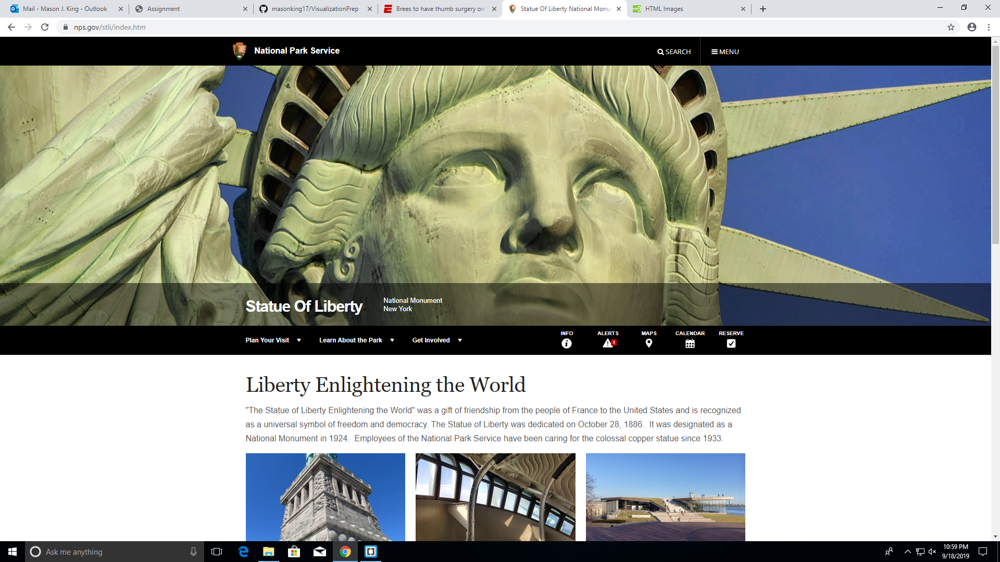
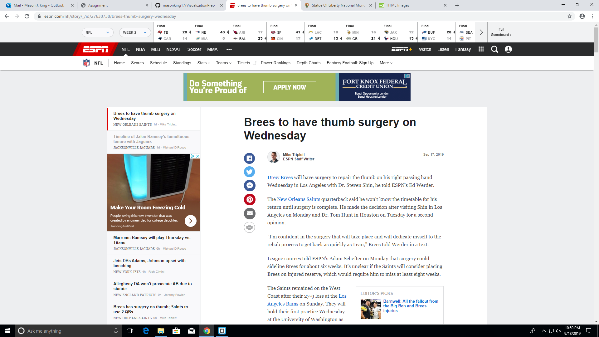

I researched visualizations on the internet and I found hundreds and hundreds of presentations, ranging widely in overall quality. During my research, I found one great visualization and one poor visualization. The better of the two came from the US National Park System's website on the information page for the Statue of Liberty. Its use of extremely detailed pictures and its clear path of navigation help make it visually appealing and helpful. The best quality of the webpage is how functional it is. You can go from page to page very easily and it is very direct and informative. It is also insightful because it has pages that tell about the history of the Statue of Liberty that help the visualization expand the "island of knowledge". The overall functionality of the site and its informative content along with the great visual aids make this a great visualization that helps vistors learn.
One visualization that I did not like very much was an article on ESPN about NFL quarterback Drew Brees having thumb surgery. The biggest reason I did not think this visualization was very good was because it was not visually appealing. It didn't seem to expand knowledge that much because it was mostly a white background with very small font that made it very boring to try to read. I think the best way to make this visualization better is by including more colors that are interesting to the reader. Adding more visual aids like quotes and pictures might make an article like this easier to understand without having to sit there and read for over five minutes. All in all, the unappealing visuals made it very uninteresting and did not increase my knowledge of the topic.

